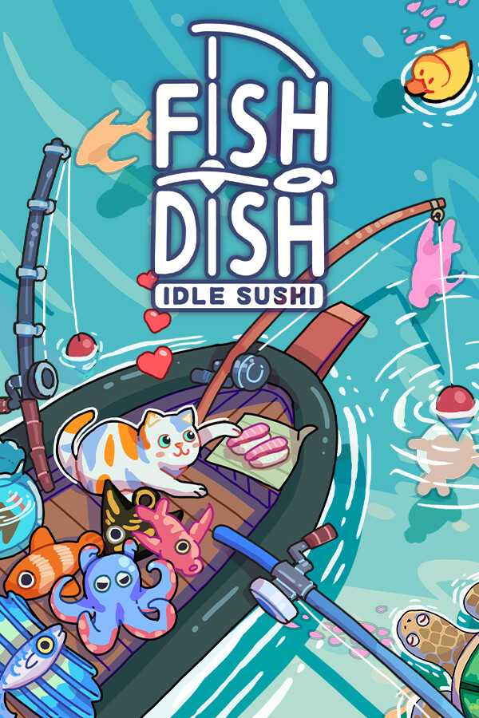

Fish to Dish: Idle Sushi
Fish to Dish: Idle Sushi
Details
|  | |
| Playtime | Not Played |
| Last Activity | Never |
| Added | 08/07/2025 0:26:22 |
| Modified | 08/07/2025 0:28:36 |
| Completion Status | Not Played |
| Library | Steam |
| Source | Steam |
| Platform | PC (Windows) |
| Release Date | 16/06/2025 |
| Community Score | |
| Critic Score | |
| User Score | |
| Genre | Indie Role-playing (RPG) |
| Developer | |
| Publisher | |
| Feature | Single Player |
| Links | Steam Discord |
| Tag | |
Description
Welcome to Fish to Dish: Idle Sushi! A laid back fishing idler that lives on your desktop, along the bottom of your screen, or just about anywhere else you'd like. Take a moment to ease your mind as you take in the sea breeze, and wait for a bite! In Fish to Dish, you're a fisherman taking to the seas to reel in weird and wonderful creatures of the deep, and then serve them up as sushi. All kinds of customers await, their bellies rumbling... So upgrade your rod, unlock new bait, sail the seas, and even build your own aquarium tank!

• Play at your own pace, and feel that sense of satisfaction as your boat heaves with awesome catches!Tap your keyboard or click your mouse to speed up the bite and reel in fish even faster!


• Cast your rod in a range of bays and isles, each with their own unique sea life. You'll see everything from everyday fish, to rare leviathans of the depths.
• What's that floating over there...? Spot starfish, turtles, walruses, even rubber ducks and much more floating out on the waves!
• Fill out your bestiary as you haul in new species, and expand your sushi bar's menu.


• Prepare your prize catches, and sell a delectable range of sushi dishes to earn gold.
• Level up your sushi bar and spruce it up with furniture and decorations. Make it your own to draw in all kinds of customers, and... cats?


• Buy rod upgrades to fish more efficiently, and return to shore with a deck chock-full of fish!
• Pick out the right bait for the fish you're after, and reel in elusive rare varieties.


• Float in relaxation, taking in the joy of fishing as the tides ebb and flow.
• Fill the hatchery with catches, and gaze over your rare fish as they flit within an aquarium ecosystem of your own creation.
• Bid stress farewell, and be at one with nature in Fish to Dish: Idle Sushi. Take time to fish at your leisure!

Game FAQ
Q: Screen flickering after Steam pop-up or pressing Shift+Tab?
A: Disable the Steam Overlay: Right-click Fish to Dish in your game library → Properties → General → Uncheck "Enable Steam Overlay while in-game." This only affects this game; others are unaffected.
Q: Game background is black?
A: Visit the store page → "Discussions" for a solution in the pinned post.
Q: Can DEMO save files be carried over to the full version?
A: No, carrying over saves may cause bugs.